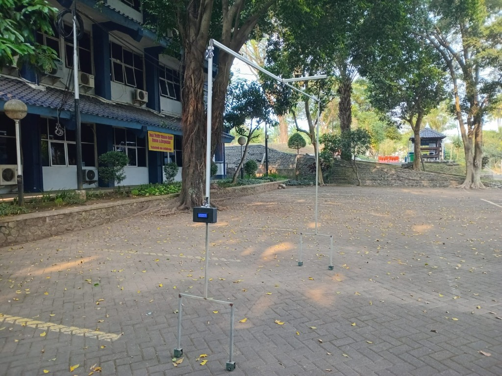
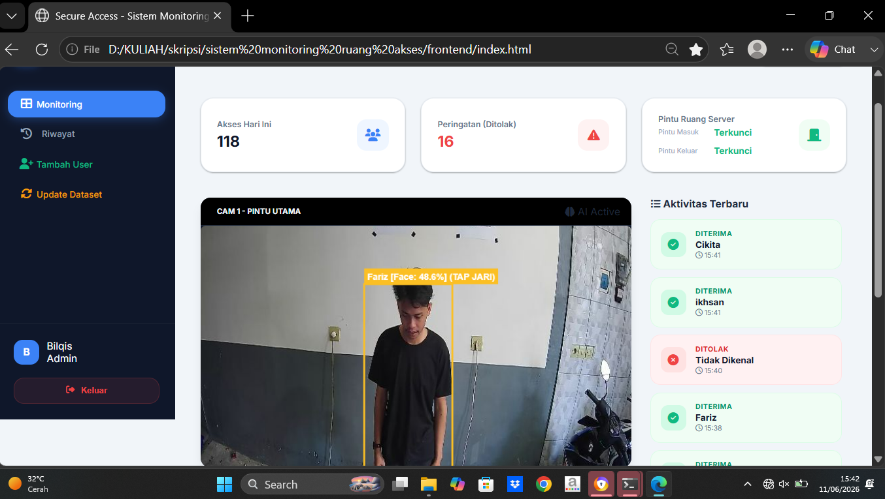
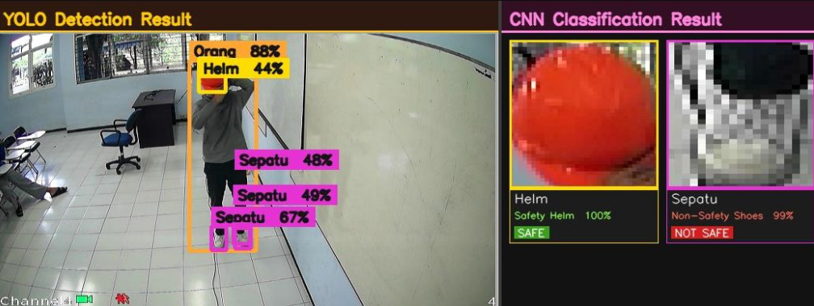
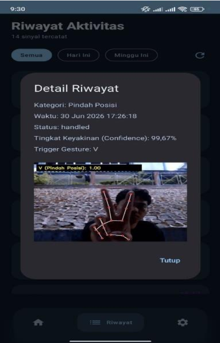

Applied Bachelor of Engineering graduate in Digital Telecommunication Networks from State Polytechnic of Malang, specializing in Computer Vision, Artificial Intelligence, Embedded IoT Systems, and Network Infrastructure Security.
I am Fariz Hadi Pamungkas, an Applied Bachelor of Engineering graduate in Digital Telecommunication Networks from State Polytechnic of Malang (Polinema). I have a deep passion for building intelligent systems that bridge Computer Vision, AI/Machine Learning, and Embedded IoT Hardware.
My work spans real-time PPE violation detection with YOLOv8 & CNN on Raspberry Pi, multi-biometric server room access security using ArcFace & ByteTrack, edge AI vehicle classification with dual TF-Luna LiDAR sensors on ESP32, and an AI-powered hand gesture patient monitoring system for stroke patients using MediaPipe & TensorFlow Lite with a mobile caregiver app.
YOLOv8 object detection, MediaPipe hand landmark tracking, ArcFace face recognition, ByteTrack & OSNet Person Re-ID, LSTM gesture classification
Raspberry Pi 4 edge inference, ESP32 microcontrollers, TF-Luna LiDAR sensors, AS608 biometric fingerprint, solenoid door locks, RTSP IP camera streams
FastAPI & Flask REST APIs, Firebase Firestore real-time sync, MySQL monitoring dashboards, Flutter mobile caregiver app with push notifications
Final Year Project — Polinema Digital Telecom Networks
Developed an assistive patient monitoring system for stroke and paralyzed patients using Google MediaPipe Hands for 21-point 3D hand landmark tracking and a deep learning LSTM model (99.67% accuracy) to classify hand gestures into essential patient requests. Deployed on Raspberry Pi 4 with FastAPI backend, Firebase Firestore real-time sync, and a Flutter mobile caregiver app featuring push notifications and gesture audit logs.
Research Project — AI & Embedded Systems Lab
Designed and built a real-time PPE (Personal Protective Equipment) violation detection and monitoring system using YOLOv8 and a custom CNN classifier deployed on Raspberry Pi 4. Integrated an IP camera RTSP stream, Flask web dashboard with MySQL violation logging, and automated alert notifications for safety compliance monitoring.
Final Year Project — AI & Biometrics Lab, Polinema
Engineered an integrated multi-biometric server room access security system combining AS608 fingerprint authentication, YOLOv8n person detection, ByteTrack multi-object tracking, OSNet Person Re-ID, and ArcFace face recognition. The system interfaces with an ESP32 microcontroller controlling solenoid door locks, with a real-time Flask web dashboard and MySQL access logging. Achieved 100% face recognition accuracy under variable lighting (54–309 lux) and distance (0.5–2m) conditions.
Engineering Project — Telecommunication Systems Lab
Built an edge AI vehicle classification system using dual TF-Luna LiDAR sensors interfaced with an ESP32 microcontroller to measure vehicle dimensions and classify vehicle types (motorcycle, car, truck) in real time without a camera. Applied lightweight TinyML inference on-device for low-latency classification at a physical portal gate.

Real-time vehicle classification system using dual Benewake TF-Luna LiDAR sensors and Feature-Weighted K-Nearest Neighbor (FWkNN) algorithm running entirely on an ESP32 microcontroller — no cloud dependency. Reconstructs vehicle silhouette profiles from ToF distance data, extracts 8 geometric features (length, height, slope, compactness, etc.), and classifies into 5 categories (City Car, Sedan, MPV, SUV, Pickup) with 91.67% accuracy. Includes WiFi-based real-time Web Monitor dashboard, ESP-NOW inter-device communication, and REMA signal filter with only ~5ms lag.

Integrated multi-biometric server room physical security system combining AS608 fingerprint verification and computer vision (YOLOv8n, ByteTrack, OSNet Person Re-ID, and ArcFace) with ESP32-driven solenoid door lock. Achieves 100% face recognition accuracy (1–2m), 82% optimal F1-score, and successfully prevents tailgating intrusion with real-time web monitoring.

Real-time Personal Protective Equipment (PPE) violation detection system running on Raspberry Pi 4 with CCTV RTSP stream input. Uses YOLOv8 for object detection (person, helmet, shoes) and a CNN classifier for compliance verification. Automatically captures photographic evidence of violations (no helmet / non-safety shoes), triggers speaker alerts, and logs all incidents to MySQL — accessible via a Flask web dashboard with login-protected violation history and printable reports.

Assistive computer vision and healthcare IoT monitoring platform designed for paralyzed and stroke patients with speech and motor impairments. Leverages Google MediaPipe Hands for 21 3D hand landmark tracking and deep learning (LSTM & TensorFlow Lite) to classify dynamic hand gestures into essential patient requests (Makan, Minum, Toilet, Tidur, Pindah Posisi) with 99.67% accuracy. Deployed on a Raspberry Pi 4 edge hub with FastAPI, Firebase Firestore real-time cloud synchronization, and a dedicated caregiver mobile app featuring instant push alerts, customizable gesture bindings, and verified visual audit logs.
Have a project in mind or just want to say hi? My inbox is always open.
Location
Malang, East Java, Indonesia